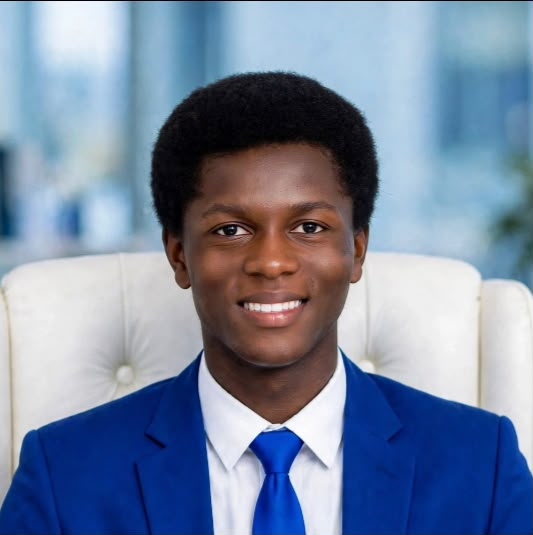
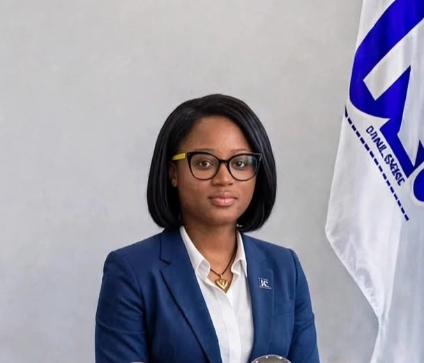
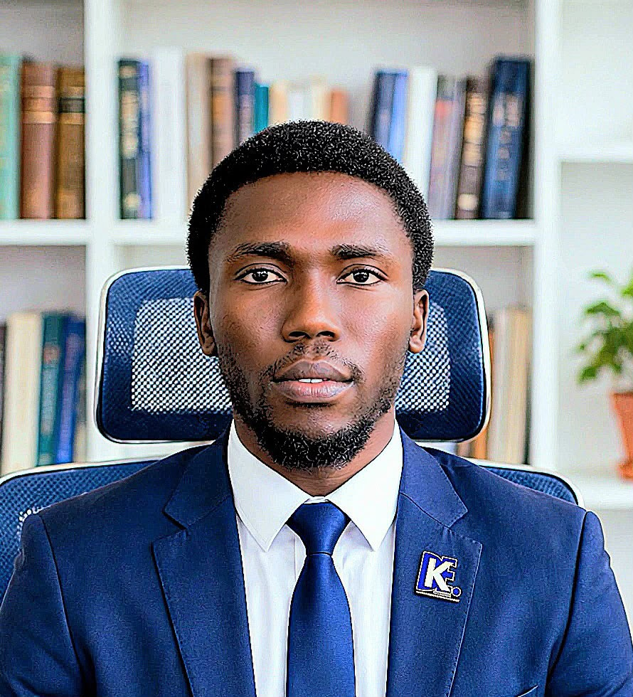

DANKAN EMPIRE GROUP founded by STEVE DANKAN (Stephen Nana Kankam Asiedu) is a Ghanaian tech conglomerate in EMPOWERMENT. We build apps now, vision for mobiles, automotive, beverages, global impact.
Building innovative mobile applications solving real African problems. This is where the empire begins.
→ CURRENT FOCUS - DANKCONNECTParent company → Multiple subsidiaries → One Empire. Like Tata, Dangote, Virgin Group. All in Blue & White identity.
Dankan Empire is a modern African technology empire. Dankan Empire Group is building a New World through technology - Apps, Automotive, Mobile, and Community Development.
Founded by STEVE DANKAN (Stephen Nana Kankam Asiedu) in Accra, Ghana, Dankan Empire is spreading worldwide through Country Ambassadors. Dankan Empire is NOT a historical empire. It is a new 21st century empire for building up Africa and empowering youth.
Dankan = To Build Up. Empire = A Community of Builders.
So Dankan Empire means "A community building up a New World with technology."
Founder: Steve Dankan | CLO: Miss Quashigah | CEO: Nana Boadu Moses
Dankan Empire meaning is a modern tech conglomerate from Ghana founded by Steve Dankan, building apps, automotive, mobile and community development.
The founder of Dankan Empire is STEVE DANKAN (Stephen Nana Kankam Asiedu) from Accra, Ghana. He is the Founder, Visionary and 100% Owner of Dankan Empire Group.
The Chief Liaison Officer (CLO) - Office of the Founder is MISS Quashigah, with 50% Executive Authority as Deputy to the Founder.
The Group CEO / Managing Director is NANA BOADU MOSES, responsible for daily operations and execution.
No. Dankan Empire is a new modern company founded in Accra, Ghana. It is not the Ghana Empire or Dahomey Empire. It is a 21st century empire for building up Africa.
We build apps now (Dankan Apps - DankanConnect), with vision for mobiles, automotive, beverages and foundation. All under Blue & White brand.
From a single app studio in Accra to a diversified conglomerate. All under our signature Blue & White brand. Dark navy text on white = clean & professional!
STATUS: ACTIVE NOW
Mobile apps, software solutions, digital products. Building the foundation and cashflow for the empire. Based in Accra, Greater Accra, Ghana.
VISION
From apps to the devices that run them. Dankan Mobile - affordable smartphones in Blue & White design.
VISION
Mobility solutions, car import, ride-tech, and future electric mobility for Ghana.
VISION
Consumer goods and beverages. Dankan Beverages - refreshing Africa in Blue & White bottles.
VISION
Giving back. Donations, education support, youth empowerment in Ghana. Empires must uplift communities.
STRUCTURE
DANKAN EMPIRE GROUP will be the parent holding company managing all subsidiaries under one powerful Blue & White brand.
DANKAN EMPIRE GROUP is the parent company. Under it, we create separate companies (subsidiaries) for each industry, all bearing the DANKAN name and Blue & White quality.
Starting in Accra, Greater Accra Region, with vision to operate across Ghana and Africa. Proudly Ghanaian, globally minded. Blue & White = Trust, Tech, Clean.
We don't put all eggs in one basket. Technology today funds mobiles tomorrow, which funds automotive, beverages, and philanthropy. Blue & White empire!
Build and launch DANKAN APPS by Founder Steve Dankan. Establish Blue & White brand, team, revenue, and digital presence. Website: dankanempire.github.io
Launch Dankan Mobile division. From software to hardware ecosystem in Blue & White.
Automotive, Beverages, Foundation. Full DANKAN EMPIRE GROUP structure with multiple subsidiaries operating in Blue & White identity.
The Bridge Structure • Founder → CLO → CEO • 50% Executive Authority • Accra, Ghana

STEVE DANKAN
Stephen Nana Kankam Asiedu
100% OWNER • STRATEGIC VISION
Founder & Owner of DANKAN EMPIRE GROUP. Sets vision, ultimate authority, governance. Building Ghana's next conglomerate from Accra.

MISS Quashigah
50% EXECUTIVE AUTHORITY • DEPUTY TO FOUNDER
The Bridge: Takes info Founder ↔️ CEO. Deputy to the Founder, Authorized Representative, ensures vision is executed.

NANA BOADU MOSES
DAILY OPERATIONS • EXECUTION
Runs daily operations, executes strategy, manages GMs, reports to CLO & Founder.
STRUCTURE: FOUNDER STEVE DANKAN (100%) → CLO MISS QUASHIGAH (50% Authority) → CEO NANA BOADU MOSES → General Managers
DANKAN EMPIRE GROUP • Accra, Ghana • Blue & White Corporate Identity • Est. 2024
We are currently building apps. If you share our vision of a Ghanaian conglomerate, let's connect. Blue & White Empire.
📍 Accra, Greater Accra Region, Ghana • Official: https://dankanempire.github.io • Blue & White Brand • Founder: Steve Dankan
EMAIL THE EMPIRE